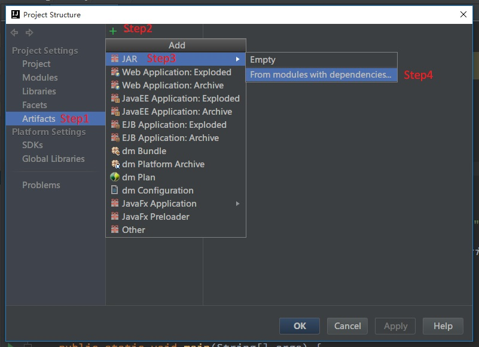
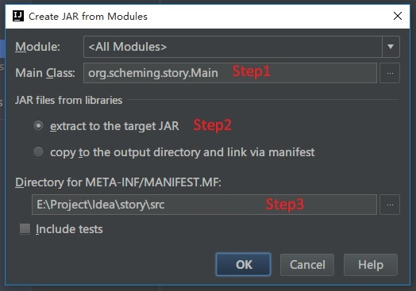
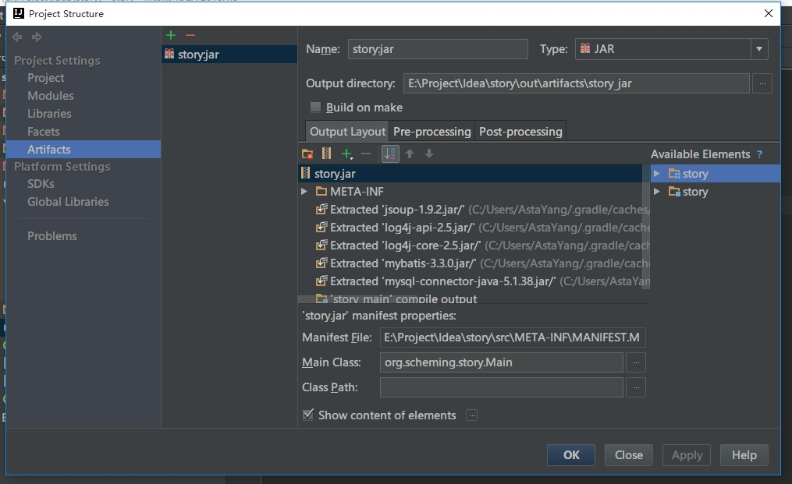
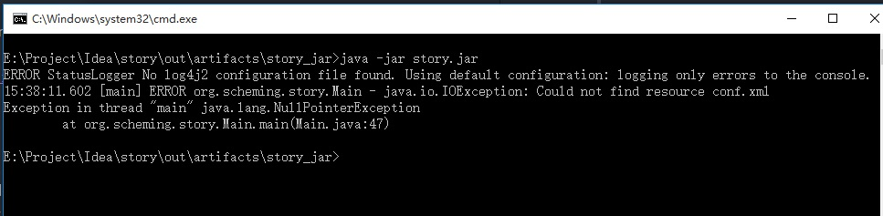
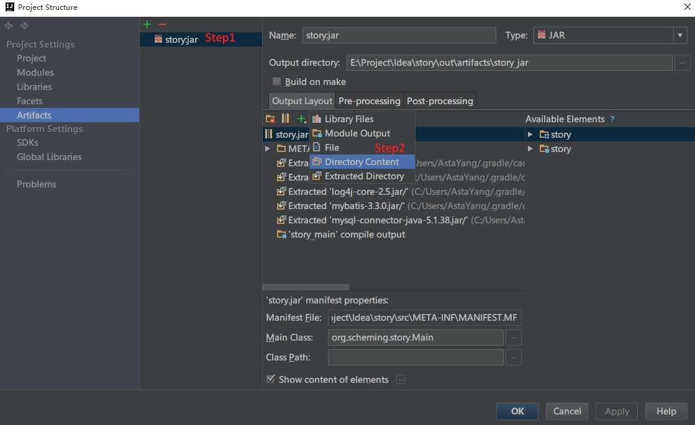
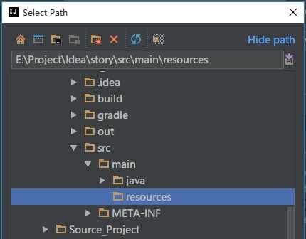

IDEA通过Gradle打包可执行Jar
文章目录
前段时间通过IDEA编写Java程序，使用的是Gradle进行依赖管理。在包管理方面Gradle的优势很大，但是在打包可执行Jar包的时候出现不能找到main方法的问题，在这里稍作记录。
- 在编写完代码后点击File->Project Structure，然后按照下图添加打包配置。

- 添加manifest配置文件

-
Step1：选择main方法的位置
-
Step2：选择
extract to the target JAR，意思是将所有依赖的jar解压到我们自己的jar包中。
copy to the output directory and link via maifest：将所有依赖的jar独立到我们jar包之外，形成多个独立的jar，然后在我们jar包中使用manifest链接。
- Step3：这里一定要将manifest文件配置到
src文件夹下面，不然manifest文件不能打包到jar中。
- 下面是目前打包的配置如下，然后点击Build->Build Artifacts->Build。

这是在你的项目文件夹下out/artifacts目录下就打包好了.jar文件，下面我们来执行jar包。java -jar stroy.jar

这里执行jar包就报错了，从错误可以看出log4j的配置文件找不到，显然是log4j的配置文件没有打包到jar文件中。
- 解决上面问题的方法就是：添加resources文件夹到jar文件中。打开Project Structure


接下来在进行打包就可以了。